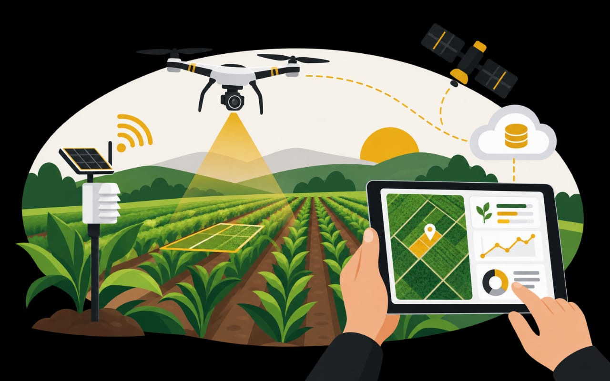
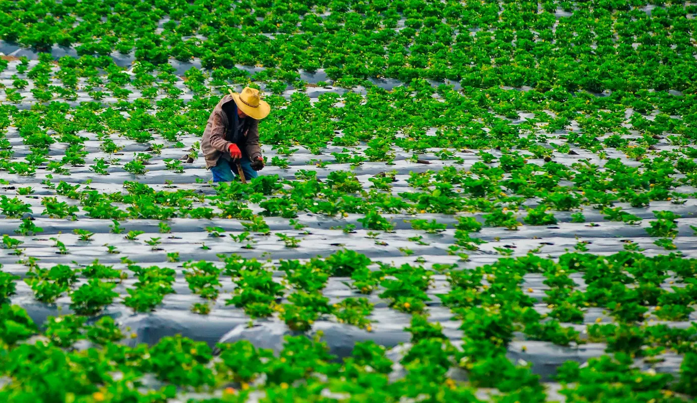
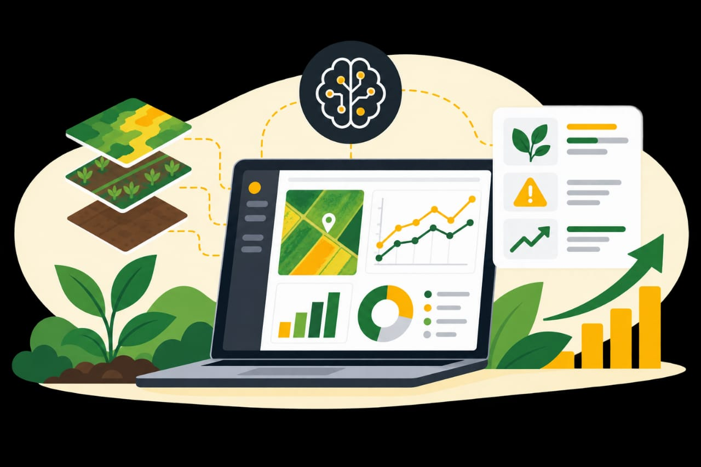
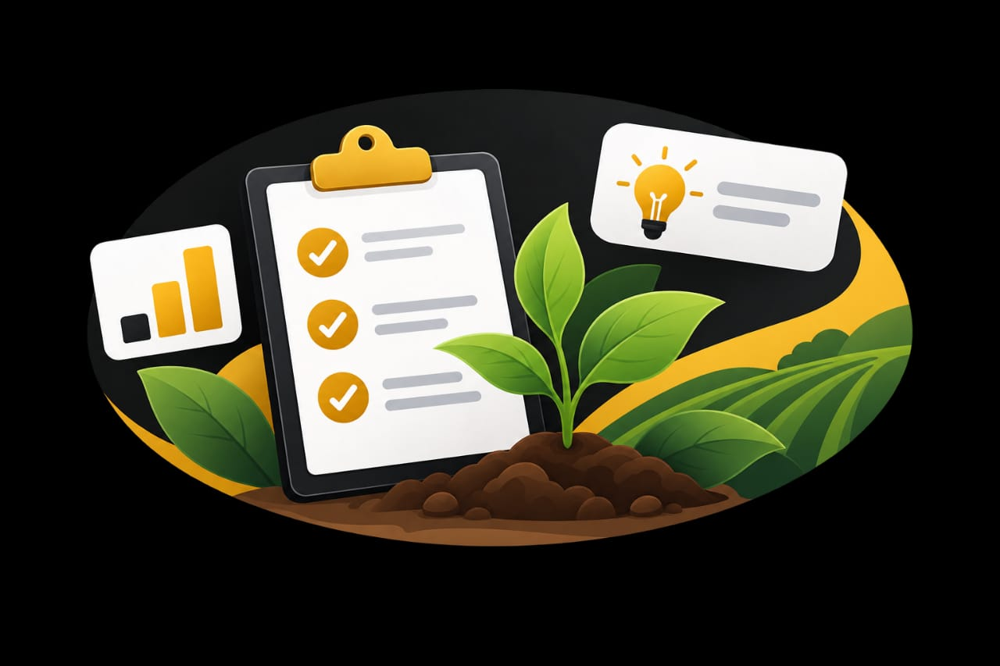
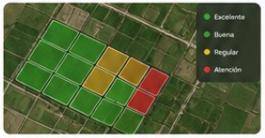
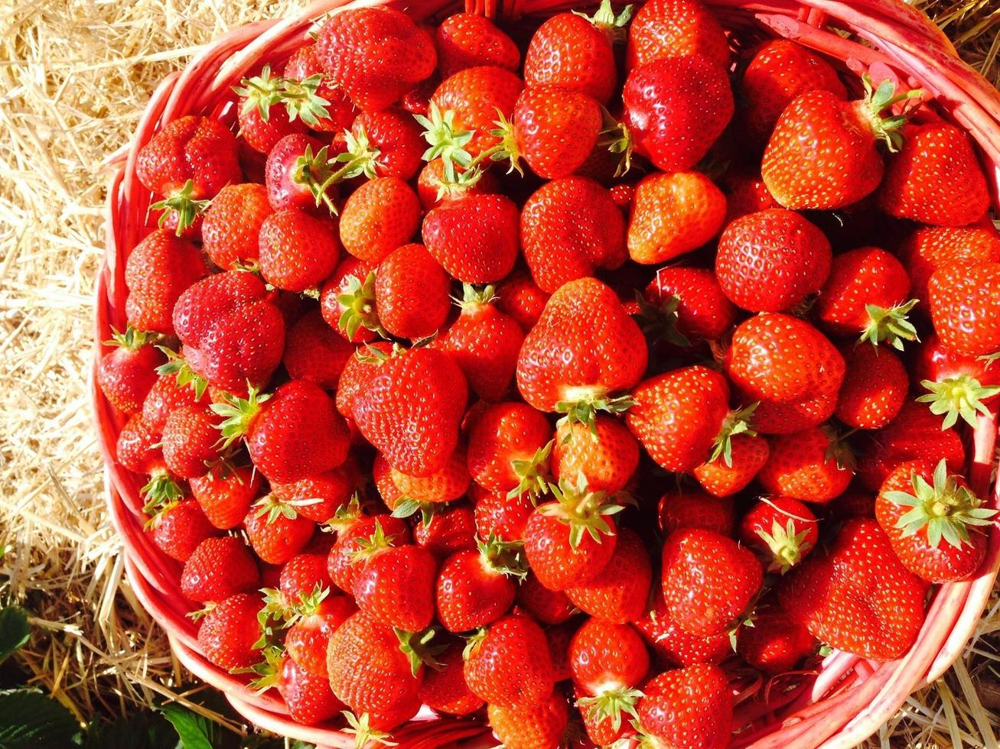

Recolección de datos
Capturamos datos en campo con tecnología de precisión para obtener información confiable.
Recogemos, analizamos y convertimos los datos de tus hectáreas de fresa en información clave para aumentar tu productividad.

Soluciones completas para el cultivo de fresa basadas en datos.

Capturamos datos en campo con tecnología de precisión para obtener información confiable.

Analizamos tus datos con modelos avanzados para encontrar patrones y oportunidades.
Generamos reportes y tableros personalizados para que tomes decisiones con confianza.

Te damos recomendaciones prácticas para mejorar el rendimiento de tu cultivo.
Monitorea el estado de tus hectáreas, consulta históricos, compara rendimientos y visualiza mapas interactivos de tu producción.
Conoce la plataforma
Trabajamos junto a productores y empresas agrícolas para impulsar una agricultura más eficiente, rentable y sostenible.


Datos precisos en tiempo real.

Monitoreo aéreo de alta resolución.

Modelos que predicen y recomiendan.
Plataforma intuitiva desde cualquier dispositivo.